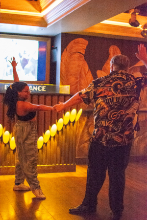

Welcome to SF Lindy Society's main page! Here we accumulate different events from across the city including our very own Beginner Dance Lesson at DecoDance bar on Polk st. every *THURSDAY* from 7-8pm with social dancing from 8-10pm.
Event Calendar
Photo Gallery
